Visualizing models
Oliver Jayasinghe and Rex Parsons
Source:vignettes/model-visualizations.Rmd
model-visualizations.RmdVisualizing cglmm models
The GLMMcosinor package includes two ways to visualize
models from cglmm(). Firstly, the function
autoplot() creates a time-response plot of the fitted
model:
library(GLMMcosinor)
object <- cglmm(
vit_d ~ X + amp_acro(time,
group = "X",
period = 12
),
data = vitamind
)
autoplot(object, x_str = "X")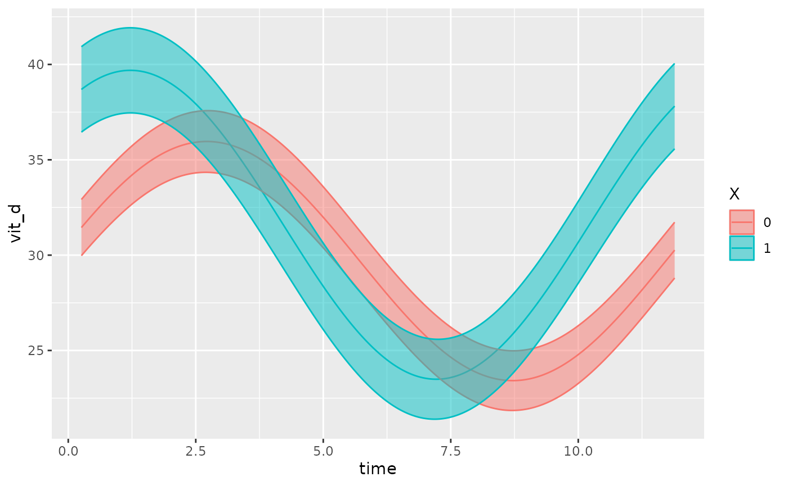
This function also allows users to superimpose the data points (that
the fit is based on) over the fitted model, using the
superimpose.data = TRUE argument:
object <- cglmm(
vit_d ~ X + amp_acro(time,
group = "X",
period = 12
),
data = vitamind
)
autoplot(object, x_str = "X", superimpose.data = TRUE)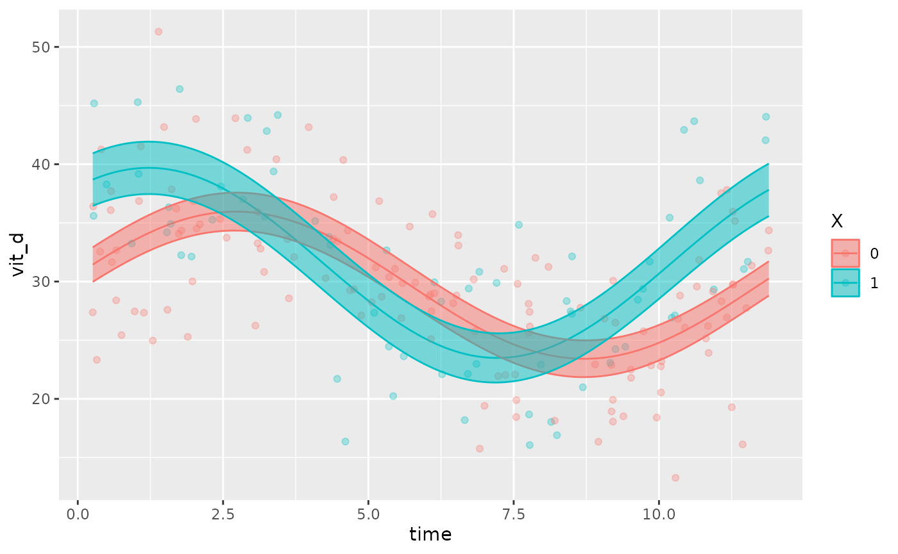
If there are multiple factors in the model, the user can specify
which covariate to be plotted using the x_str argument
which accepts a string corresponding to a group name within the original
dataset. By default, x_str = NULL and the intercept is
plotted (all group levels = 0).
The following examples demonstrate how x_str can be used
to produce different plots for the same model. Note how
predict.ribbon can be set to FALSE to remove
the prediction interval from the plots.
testdata_two_components <- testdata_two_components
testdata_two_components$X <- rbinom(length(testdata_two_components$group),
2,
prob = 0.5
)
object <- cglmm(
Y ~ group + amp_acro(times,
n_components = 2,
period = c(12, 6),
group = c("group", "X")
),
data = testdata_two_components,
family = poisson()
)
autoplot(object, predict.ribbon = FALSE)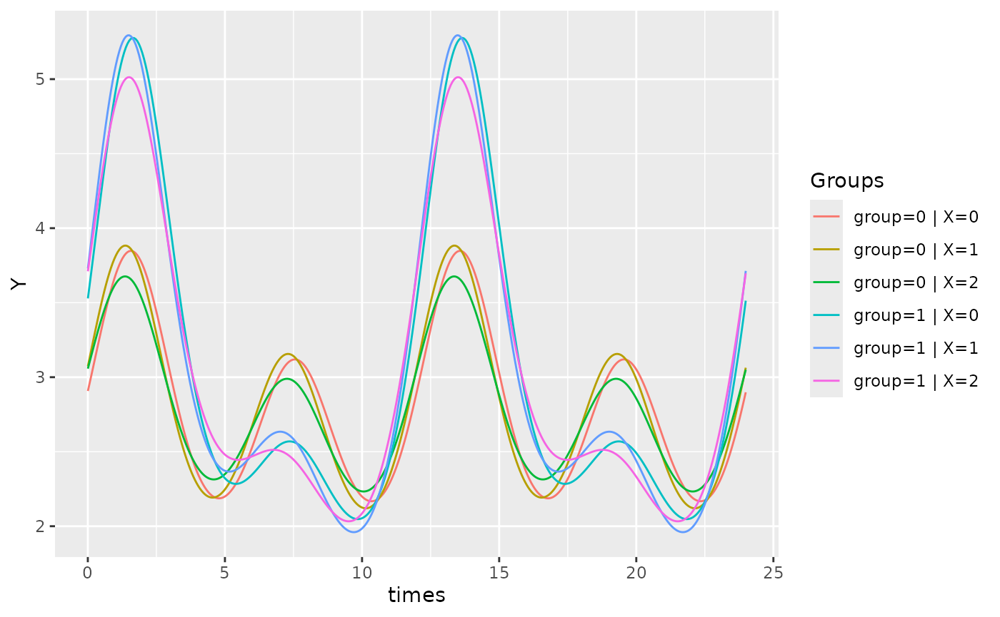
object <- cglmm(
Y ~ group + amp_acro(times,
n_components = 2,
period = c(12, 6),
group = c("group", "X")
),
data = testdata_two_components,
family = poisson()
)
autoplot(object, x_str = "X", predict.ribbon = FALSE)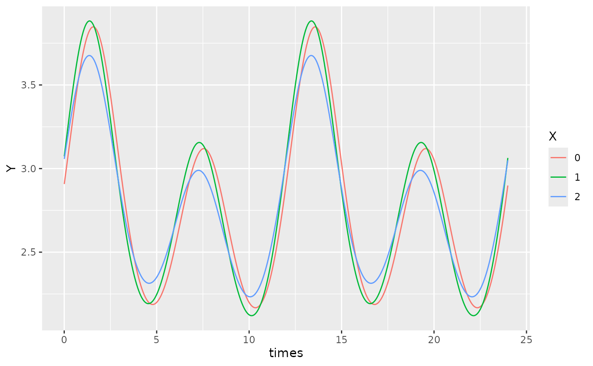
object <- cglmm(
Y ~ group + amp_acro(times,
n_components = 2,
period = c(12, 6),
group = c("group", "X")
),
data = testdata_two_components,
family = poisson()
)
autoplot(object, x_str = "group", predict.ribbon = FALSE)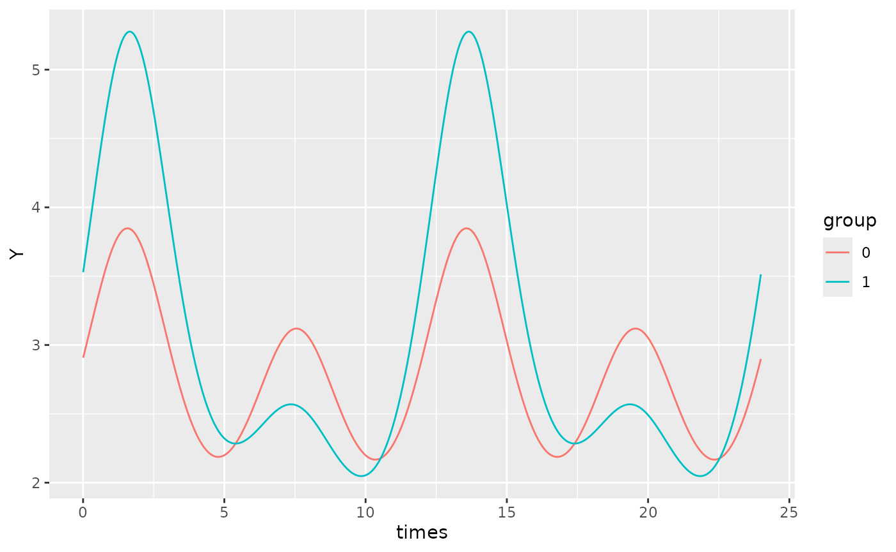
By default, xmin will be set to the minimum time value
in the time vector of the original dataframe, and xmax will
be set to the maximum time value. If we want to focus on a specific
region of the plot, we can define use the xlims argument to
specify the x-bounds.
For example, on the plot above, we can adjust the x-limits:
object <- cglmm(
Y ~ group + amp_acro(times,
n_components = 2,
period = c(12, 6),
group = c("group", "X")
),
data = testdata_two_components,
family = poisson()
)
autoplot(object, x_str = "group", predict.ribbon = TRUE, xlims = c(13, 15))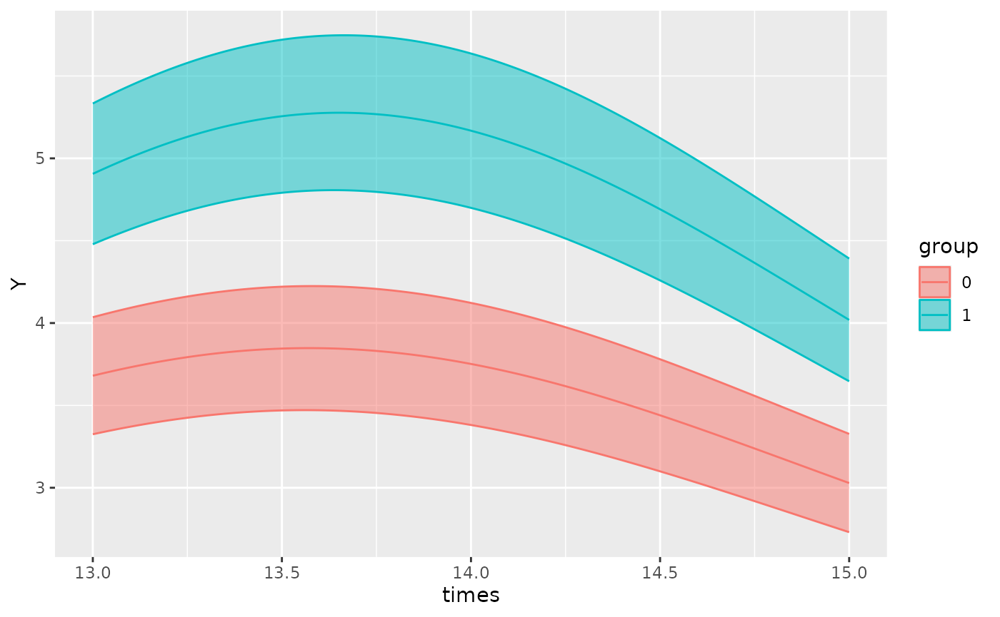
To increase the resolution of the plots, the
pred.length.out can be increased. If there are multiple
periods, the function will automatically generate an appropriate number
of points to plot such that the smallest period has sufficient
resolution to appreciate cosinor behaviour. This can be adjusted using
the points_per_min_cycle_length argument which is 20 by
default.
testdata_period_diff <- simulate_cosinor(
1000,
n_period = 1,
mesor = 7,
amp = c(0.1, 0.4),
acro = c(1, 1.5),
family = "poisson",
period = c(12, 1000),
n_components = 2
)
object <- cglmm(
Y ~ amp_acro(times,
n_components = 2,
period = c(12, 1000)
),
data = testdata_period_diff,
family = poisson()
)
autoplot(object, points_per_min_cycle_length = 40)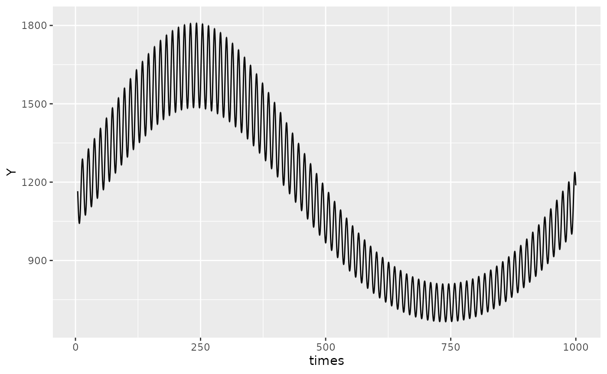
Polar plots
In addition to time-response plots, the GLMMcosinor
package also allows users to create polar plots. In these plots, the
plotted point represents the acrophase estimate, and the radius
represents the amplitude estimate for a given component or group. The
ellipses represent confidence regions.
model <- cglmm(
vit_d ~ X + amp_acro(time,
group = "X",
period = 12
),
data = vitamind
)
polar_plot(model)There is in built method to directly assess differential rhythmicity,
the overall difference between two rhythms in terms of both amplitude
and phase combined. It can be done using a likelihood ratio and is
demonstrated as part of the Getting
started vignette. It can also be assessed by visually inspecting the
polar_plot() and seeing whether the ellipses exclude each
others poles. For example, in the plot above, both ellipses exclude the
center point (black dot) of the other ellipses. These two rhythms differ
primarily by their phase, and not their amplitude, but this visual
assessment determines that there statistically significant (p<0.05
since these are 95% confidence regions) differences in their overall
rhythmicity. To estimate the differences in the rhythmic parameters
(amplitude and phase) individually, see the usage of
test_cosinor_levels() or
test_cosinor_components().
The angle units in the plot can be specified with the
radial_units argument. By default, the units are in radians
where a complete revolution of the plot (2\pi) represents the maximum period from the
model. The units can be changed to degrees, or even to be expressed in
the same units as the period specification.
model <- cglmm(
vit_d ~ X + amp_acro(time,
group = "X",
period = 12
),
data = vitamind
)
polar_plot(model, radial_units = "degrees")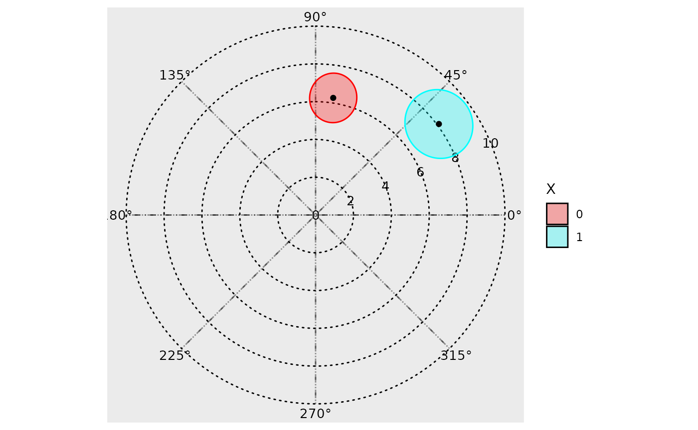
By default, the function creates creates polar plots for all
components and stitches them together using the
make_cowplot = TRUE argument. If the user wishes to plot
just one component, they can specify this by using
component_index, though the make_cowplot
argument must be FALSE for this to register.
The direction that the angle increases in can be changed with the
clockwise argument, and the location of the angle = 0 starting point can
be specified with the start argument. Hence, if the user
wishes to create a polar plot that resembles a clock, this can be done
by specifying clockwise = TRUE and
start = "top".
The argument: overlay_parameter_info can be used to
create a line extending from the origin to the parameter estimate (to
visualize the amplitude estimate), and a circular arc extending from the
angle starting position (at 0) to the acrophase estimate.
model <- cglmm(
vit_d ~ X + amp_acro(time,
group = "X",
period = 12
),
data = vitamind
)
polar_plot(model, overlay_parameter_info = TRUE)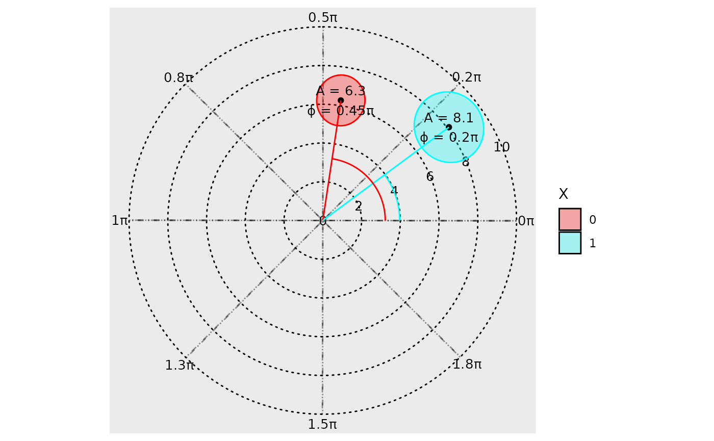
The background grid can also be customized. The argument
grid_angle_segments is used to specify how many sectors the
polar grid has, and the n_breaks argument can be used to
specify the number of concentric circles.
model <- cglmm(
vit_d ~ X + amp_acro(time,
group = "X",
period = 12
),
data = vitamind
)
polar_plot(model,
grid_angle_segments = 12,
clockwise = TRUE,
start = "top",
n_breaks = 5
)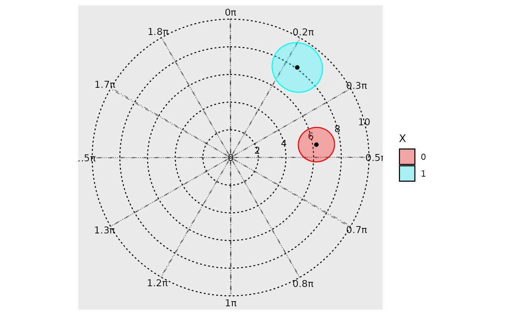
If the user wishes to zoom into the confidence ellipses to show
relevant information, they can adjust the view from the default
full (which plots a full view of the polar plot) to
zoom (which enlarges the smallest view window containing
all confidence ellipses), or zoom_origin (which enlarges
the smallest view window containing all confidence ellipses AND the
origin).
model <- cglmm(
vit_d ~ X + amp_acro(time,
group = "X",
period = 12
),
data = vitamind
)
polar_plot(model,
grid_angle_segments = 12,
clockwise = TRUE,
start = "top",
view = "zoom_origin"
)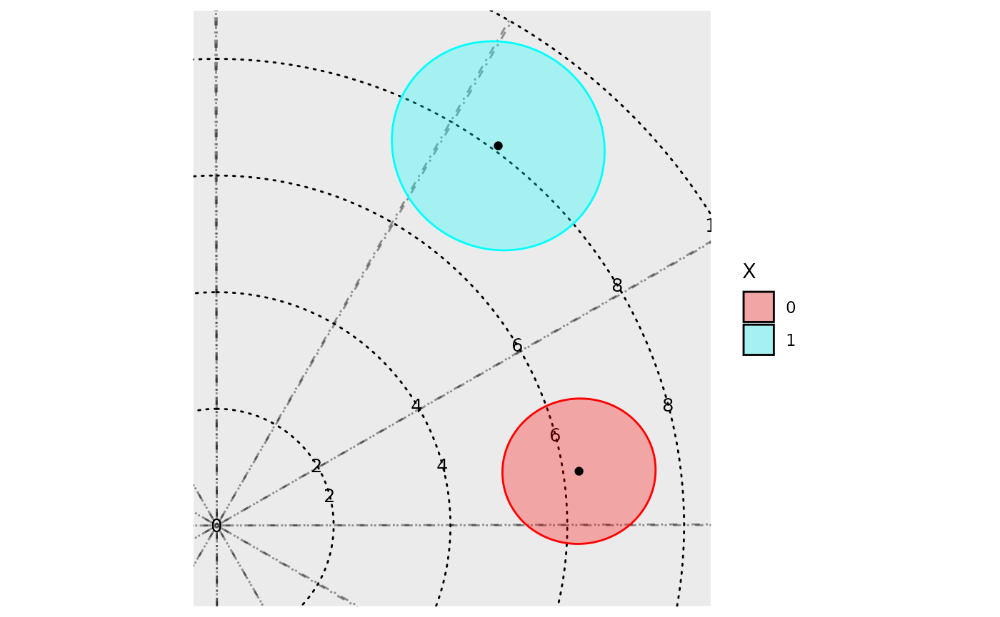